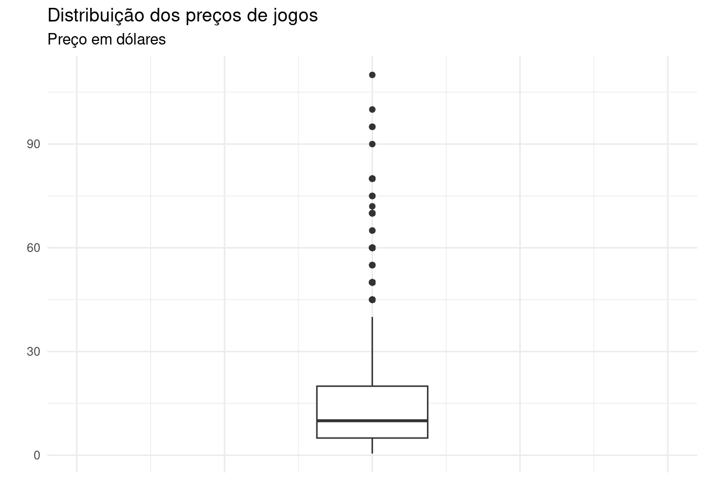
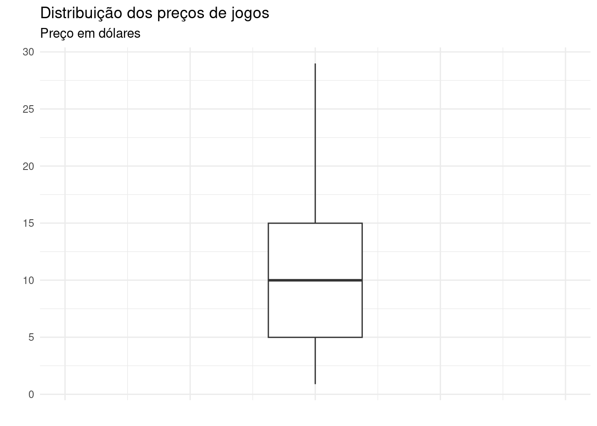
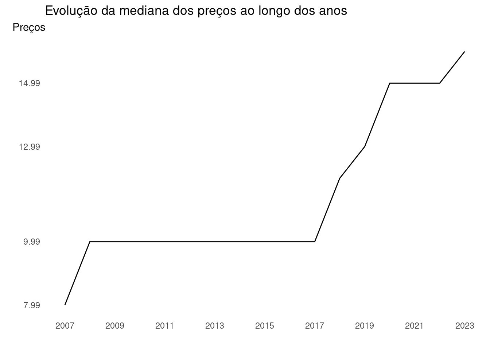
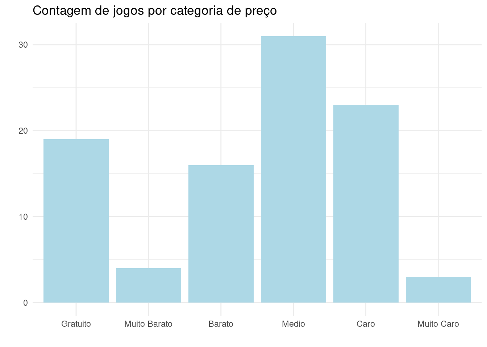
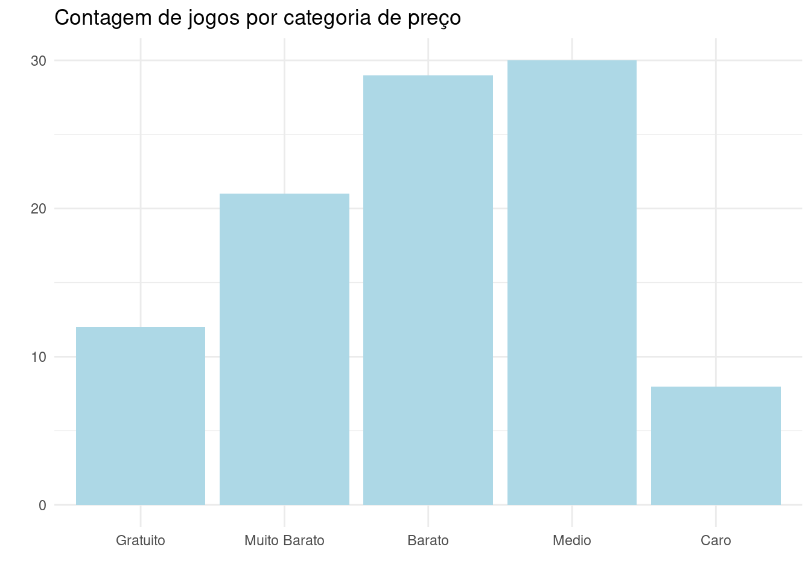
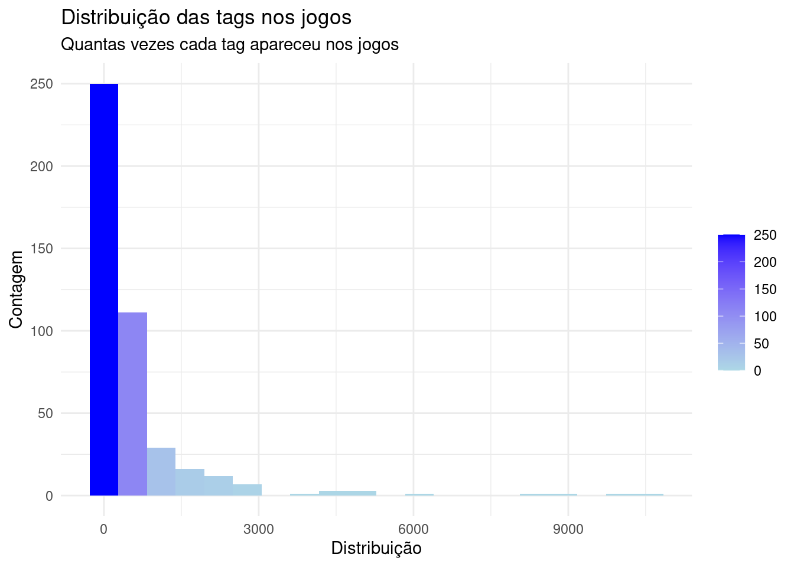
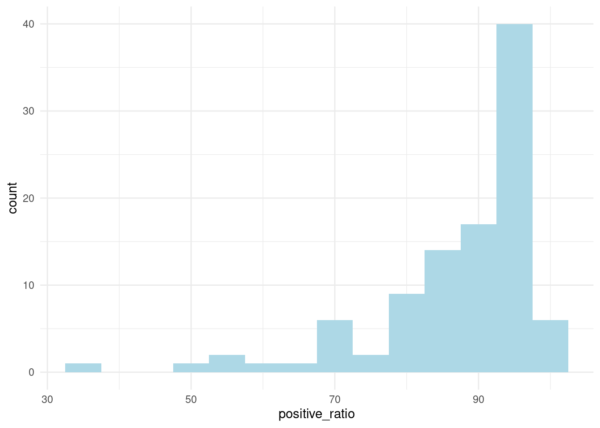

A ideia desta análise é ilustrar os conhecimentos adquiridos em R, começando com uma análise exploratória dos dados, e tentando trazer alguns insights relacionados à empresas que queiram lançar jogos de sucesso no mercado. Para isso vou passar pelas etapas de elaboração do objetivo, trabalho no tratamento e limpeza dos dados, fazer análises de variáveis de interesse individualmente e depois cruzando algumas delas para tentar traçar algumas conclusões, e sugerir alguns caminhos para empresas que pretendem lançar seus jogos no mercado da Steam.
O objetivo
Somos um estúdio de jogos e queremos analisar: 1 - Qual gênero/categoria de jogo tem mais sucesso na steam, definindo sucesso como melhores avaliações; 2 - Também queremos analisar qual faixa de preço é mais interessante para o lançamento desse novo jogo, ou seja, qual faixa de preço tem maior número de vendas.
Análise exploratória das bases de dados
Inicialmente irei fazer uma análise exploratória de algumas bases de dados e suas variáveis que podem ser interessantes para determinar sucesso de um jogo, a faixa de preço, a quantidade de vendas e relacionar essas questões aos gêneros e categorias. Foram feitas análises de três bases de dados, a primeira mais completa, e as duas seguintes mais focadas em reviews de usuários. São bases de dadas extraídas do Kaggle que serão utilizadas para o estudo.
Base de dados - 1
Base de dados - 2
Base de dados - 3
Diferenças entre base 1 e 3
Unindo as bases
Como comentado nas diferenças entre as bases, eu considerei algumas faltas de avaliações/jogadores como inconsistentets na base 1, portanto utilizarei a base 3 e farei a adição dos jogos não presentes nela, que estão presentets na base 1.
Código
## Base 1df_selected_gen <- data.table::fread(here::here("data-raw/created-tables/db-games-1.csv"))## Base 3df_games_selTags <- data.table::fread(here::here("data-raw/created-tables/db-games-3.csv"))## Jogos presentes na base 1 que não estão na base 3df_antijoin_games <- dplyr::anti_join(df_selected_gen, df_games_selTags, by ="app_id") |> dplyr::mutate(rating =0, price_final =0, price_original =0, discount =0, steam_deck = F, db1 = T, release_date = lubridate::ymd(release_date)) |> dplyr::mutate(user_reviews = positive+negative) |> dplyr::select(app_id, title = name, date_release = release_date, win = windows, mac, linux, rating,positive_ratio = overall, user_reviews, price_final = price, price_original, discount, steam_deck, db1)## Jogos da base 3df_games_selTags <- df_games_selTags |> dplyr::mutate(db1 = F, date_release = lubridate::ymd(date_release)) |> dplyr::select(-tags)# colnames(df_games_selTags)# colnames(df_antijoin_games)## Unindo base 3 e jogos da base 1 não presentes na base 3df_all_games <-rbind(df_games_selTags, df_antijoin_games, fill = T)
Também foi analisado novamente as duplicatas que foram geradas, e novamente foi decidido mantê-lás, já que representavam, ou jogos que possuíam o mesmo nome, mas são jogos diferentes, ou são diferentes versões dos jogos (versão normal e versão game of the year ou um relançámento por exemplo).
Adicionando informações
Agora adicionaremos à base agrupada os dados referentes às informações do jogo, inicialmente adicionando através de outro arquivo presente nos arquivos da base 3.
Código
run_join <- Tif(run_join){# library(jsonlite) out <-lapply(readLines(here::here("data-raw/steam-data/db-3/games_metadata.json")), fromJSON)## Unindo o terceiro elemento da listafor(i in1:length(out)){ purrr::pluck(out, i, 3)<-paste0(purrr::pluck(out, i, 3), collapse =",") }## Transformando em um dataframe para unir à outra base df_metadata <-do.call(rbind.data.frame, out)## Adicionando coluna de tags do df_metadata, e adicionando colunas de categoria, genero e tags extra do df anterior df_all_games <- dplyr::left_join(df_all_games, df_metadata, by ="app_id") |> dplyr::select(-description) |> dplyr::left_join(df_selected_gen |> dplyr::select(app_id, categories, genres, tags) |> dplyr::rename(tags_extra = tags),by ="app_id")## Escrevendo nova base para não precisar rodar os joins e comparações todas as vezesif(!dir.exists("data-raw/created-tables/")){dir.create("data-raw/created-tables/") } data.table::fwrite(df_all_games, here::here("data-raw/created-tables/db-reviews-join.csv"))}else{ df_all_games <- data.table::fread(here::here("data-raw/created-tables/db-reviews-join.csv")) |> dplyr::mutate(categories =ifelse(categories =="", NA, categories),genres =ifelse(genres =="", NA, genres),tags =ifelse(tags =="", NA, tags),tags_extra =ifelse(tags_extra =="", NA, tags_extra))}
Analisando dados
Agora que já uni as duas bases, e tenho uma quantidade mais razoável de jogos a serem analisados, precisarei definir qual será a forma de avaliar os estilos/gêneros/categorias dos jogos, por ser uma coluna presente em ambas as bases, a variável tags é uma ótima candidata, porém ela apresenta um número de possibilidades bastante grande e distinta, o que poderia ser prejudicial à análise. Já as outras variáveis categories e genres que são mais específicas, não estão presentes em aproximadamente 40% da base de dados. A análise será feita inicialmente nas três para posterior decisão de qual ou quais usar.
Ou seja, na base de dados aproximadamente 59% das linas não tem informação de categorias, a variável poderia ser utilizada, porém com algumas ressalvas.
E, para efeito de comparação, podemos ver que os valores sem categorias e gênero são as mesmas observações, o que faz bastante sentido já que foram unidas e uma das duas bases não possuía essas colunas.
Já no caso das tags, todas as observações possuem alguma informação nas variáveis tags ou tags_extra (o que também faz sentido, já que unimos duas bases diferentes e uma delas possuia a coluna tags e a outra tags_extra).
Portanto, farei uma análise mais aprofundada para gerar uma única coluna que possa ser analisada.
Como uni duas bases de dados, precisamos tratar e unificar a nossa coluna que será definida como classificadora dos jogos. A base 1 possuía dados nas colunas genres, categories e tags, já a base 3 apenas em tags.
A coluna que se adequava melhor aos objetivos no caso da base 1, era a variável tags, já que possuía mais classificações para os jogos que a variável genres, normalmente possuindo tudo que estava presente nela e mais algumas outras características. E a variável Categories estava mais associada ao modo de jogo e informações da Steam, como se possuía Achievements, conquistas nos jogos, se tinha suporte a controle pela Steam, etc.
Como alguns jogos estavam em ambas as bases de dados, por fim acabei ficando com duas colunas de classificação, e para não perder nenhuma classificação, achei interessante comparar as características e adicionar as faltantes, fazendo como se fosse uma união de tudo que aparecia em ambas as variáveis.
Separação de tags
Código
teste_interno <- Tif(teste_interno){df_all_games <- data.table::fread(here::here("data-raw/created-tables/db-reviews-join.csv")) |> dplyr::mutate(tags =ifelse(tags =="", NA, tags),categories =ifelse(categories =="", NA, categories),genres =ifelse(genres =="", NA, genres),tags_extra =ifelse(tags_extra =="", NA, tags_extra))}## Verificando as diferenças entre tags de um df e do outro (tags e tags_extra)df_tags <- dplyr::select(df_all_games, app_id, title, tags, tags_extra) |> dplyr::filter(!is.na(tags) |!is.na(tags_extra))df_tags_equal <- df_tags[tags == tags_extra,]df_tags_not_equal <- df_tags[tags != tags_extra,]## Primeiro check será em jogos que possuem números de tags diferentestags_dif_ids <- df_tags_not_equal |> dplyr::select(app_id, tags, tags_extra) |> dplyr::mutate(check_lenght =ifelse(stringr::str_length(tags) == stringr::str_length(tags_extra), T, F))
Analisando tags diferentes
Então, será criado uma nova coluna para as tags diferentes. É feita uma comparação, entre as duas colunas, e é mantido em um vetor o que temos de elementos iguais (equal), depois em outro vetor o que temos a mais em uma coluna (diff1) e no terceiro o que temos a mais na outra coluna (diff2).
Então, transformei novamente estes vetores em colunas para poder inspecionar como ficaram as novas colunas. E nesse momento verifiquei que por serem bases diferentes, em alguns casos existiam pequenas variações no nome da classificação, que foram ajustados para que não influênciassem na contagem final. Um exemplo destes casos era a categorização “Rogue like”, que em uma base estava definida como “Rogue like” e na outra “Rogue-like”, isso e mais algumas outras categorizações foram normalizadas.
Código
### XXXXXXXXXXXXXXXXXXXXXXXXXXXXXXXXXXXXXXXXXXXXXXXXXXXXXXXXXXXXXXXXXXXXX ####### ALTERAR TAGS ALL, usar tidyr e dplyr (consultar fct_ajustando_tags)### não é possível de forma tão simples, talvez usando trible? (lista dentro do df)### Gerar uma lista com os elementos e fazer um "union" entre elas e um "intersect"### XXXXXXXXXXXXXXXXXXXXXXXXXXXXXXXXXXXXXXXXXXXXXXXXXXXXXXXXXXXXXXXXXXXXX ####vector_tags <- df_tags_not_equal$tags |> purrr::map(\(x) stringr::str_sort(stringr::str_split_1(x, pattern =",")))vector_tags_ex <- df_tags_not_equal$tags_extra |> purrr::map(\(x) stringr::str_sort(stringr::str_split_1(x, pattern =",")))# vector_tags_aux <- vector_tags[1:5]# vector_tags_ex_aux <- vector_tags_ex[1:5]## Criando uma lista com todas as tags q estão presentes em uma coluna e não na outra ## (estão em tags e não estão em tags_extra, estão em tags_extra e não estão em tags)diff_elem <-NULLfor(i in1:length(vector_tags)){ elem_1 <-pluck(vector_tags, i) elem_2 <-pluck(vector_tags_ex, i) diff1 <-setdiff(elem_1, elem_2) diff2 <-setdiff(elem_2, elem_1) equal <-intersect(elem_1, elem_2)pluck(diff_elem, i, 1) <-paste0(equal, collapse =",")pluck(diff_elem, i, 2) <-paste0("1 - ", paste0(diff1, collapse =","), ". 2 - ", paste0(diff2, collapse =","))pluck(diff_elem, i, 3) <-pluck(df_tags_not_equal, 1, i)}## Alterando para DF, para melhor visualizaçãodf_diff <-data.frame(t(sapply(diff_elem, c)))colnames(df_diff) <-c("equal", "diff", "id")df_diff <- df_diff |> tidyr::separate_wider_delim(diff, ". 2", names =c("first", "seccond")) |> dplyr::mutate(seccond =paste0("2", seccond)) |> dplyr::mutate(equal =as.character(equal),id =as.integer(id))## Investigando tags com mesmo tamanho, buscando pequenas alterações na escritadf_diff_ <- df_diff |> dplyr::filter(!(first =="1 - ") &!(seccond =="2 - ")) |> dplyr::filter(stringr::str_length(first) == stringr::str_length(seccond))## Palavras com grafias levemente diferentes serão alteradas## Roguelike e Roguelite para Rogue-like e Rogue-lite,## Base Building para Base-Building## e-sports para eSports## Football (Soccer) para Soccer## Football (American) para Football## Puzzle Platformer para Puzzle-Platformerdf_diff <-func_ajustando_tags(df_diff, debug)df_diff <- df_diff |> dplyr::select(id, tags)
Tags NA
Após a separação e tratamento de ambas os conjuntos de dados, verifiquei que existia um número grande de dados que não havia sido incluído em nenhuma base, nem no que possuía as tags iguais nem nos que possuíam as tags diferentes. Descobri que isso foi causado pela forma como o R trata NA, as colunas que possuem NA não são comparadas diretamente, então elas ficaram excluídas da junção anterior. Portanto, tratei de forma que também adicionasse estes casos de forma simples, copiando os dados de uma coluna à outra, para tratar de forma similar à que seria tratado o conjunto de dados que possuía as colunas iguais.
Código
## Como ainda possuíamos um número grande de NAs em uma das duas colunas, a solução foi copiar## a coluna preenchida e tratar como se fosse uma junção que não precisaria de tratamento## Tags e Tags_extra NAdf_tags_na_1 <- df_tags[is.na(tags)]## Clonando a coluna de tags para que seja tratada da mesma forma para o df com tags iguaisdf_tags_na_1$tags <- df_tags_na_1$tags_extradf_tags_na_3 <- df_tags[is.na(tags_extra)]## Clonando a coluna de tags para que seja tratada da mesma forma para o df com tags iguaisdf_tags_na_3$tags_extra <- df_tags_na_3$tagsdf_tags_equal <-rbind(df_tags_equal, df_tags_na_1, df_tags_na_3)
Visualzando tags mais frequentes
Após a organização e limpeza das tags, vou começar com uma visualização simples para identificar as tags mais utilizadas (e as menos utilizadas). Esse processo poderá ser feito no futuro para as outras variáveis de categoria e gênero, de forma similar, já que a estrutura das variáveis é a mesma. Outro detalhe é que farei uma junção, agora da tabela com as tags diferentes e com as que defini como tags iguais.
Código
df_tags_all <- df_tags_equal |> dplyr::select(app_id, tags) |>rbind(df_diff |> dplyr::rename(app_id = id))all_ordered <- df_tags_all$tags |> purrr::map(\(x) stringr::str_sort(stringr::str_split_1(x, pattern =",")))## Colocando tudo numa única lista para contagemall_string_listwise <-tolower(unlist(lapply(all_ordered, unique)))## Fazendo a contagem e transformando em um dataframe, podemos verifiicar diretamente na tabeladf_tags_count <-as.data.frame(table(all_string_listwise), stringsAsFactors = F)## Renomeando colunasnames(df_tags_count) <-c("tag", "count")## Escrevendo base de dadosdata.table::fwrite(df_tags_count, here::here("data-raw/created-tables/df-tags-count.csv"))## Utilllizamos as 50 tags que mais aparecem e criamos uma nova tabela para visualizaçãodf_tags_count |> dplyr::arrange(desc(count)) |> dplyr::slice_head(n =50) |> DT::datatable()
Organizando nova tabela
E então, para finalizar a organização das tags, nós vamos excluir as características dos jogos que vieram de ambas as bases, e vamos adicionar essa nova coluna tratada.
Um ponto que notei após a adição das tags, é que existia um número razoável de não jogos, que estava influenciando outras análises, portanto decidi já filtrar após a adição das novas tags.
Vou agora me debruçar sobre as faixas de preços e em seguida farei um cruzamento dos dados de preços e tags.
Utilizarei a base criada anteriormente, com a nova coluna de característica dos jogos (tags). E criarei uma tabela com as informações descritivas relacionadas ao preço, para essa análise irei excluir os jogos gratuitos, para que não influêncie tanto nas métricas.
Código
## Usado para escrever o qmd, porém não preciso utilizar ao rodar a análise completa (outro qmd já fará a leitura desse arquivo)df_all_games <- data.table::fread(here::here("data-raw/created-tables/db-all-games-tags-all.csv"))# ## Base 1# df_base_1 <- data.table::fread(here::here("data-raw/created-tables/db-games-1.csv"))# ## Base 3# df_base_3 <- data.table::fread(here::here("data-raw/created-tables/db-games-3.csv"))## Selecionando apenas colunas utilizadasdf_payed_games <- df_all_games |> dplyr::filter(price_final >0& price_original >0)## Verificando menor valor (em dólares)min_games <-min(df_payed_games$price_original)## Verificando maior valor (em dólares)max_games <-max(df_payed_games$price_original)## Verificando valor central (em dólares)median_games <-median(df_payed_games$price_original)## Verificando quartisquant_games <-quantile(df_payed_games$price_original, probs =c(0, 0.25, 0.5, 0.75, 1))df_med_games <-data.frame(metrica =character(),valores =character())# summary(df_payed_games$price_original)df_med_games[nrow(df_med_games)+1, ] =c("Mínimo", min_games)df_med_games[nrow(df_med_games)+1, ] =c("1° Quartil", round(quant_games[2], 2))df_med_games[nrow(df_med_games)+1, ] =c("Mediana", median_games)df_med_games[nrow(df_med_games)+1, ] =c("3° Quartil", round(quant_games[4], 2))df_med_games[nrow(df_med_games)+1, ] =c("Máximo", max_games)df_med_games |> gt::gt()
Aqui já posso tirar algumas conclusões: - As medidas de tendência central apontam para faixas de preço dos jogos pagos relativamente baixa, apesar de termos jogos mais caros (com o máximo sendo de $110). Vamos analisar com mais cautela as categorias de preços dos jogos, já que será uma das bases de decisão na escolha do tipo de jogo a ser lançado. - Também nos decis comparei a faixa de preço do jogo lançada, que será utilizada para as visualizações e análises, com a faixa de preço atual. Em geral vi uma variação para baixo nos decis quando comparamos o preço de lançamento e o preço atual, indicando que os jogos tendem a cair de preço com o tempo, o que é visto com frequência para quem acompanha os preços da Steam, quando os jogos começam a ficar mais velhos, é comum existirem cortes de preços e promoções para tentar aumentar o número de vendas.
Visualizações das faixas de preço
Vou utilizar um gráfico para ilustrar as diferentes faixas de preços dos jogos. Para isto, escolhi um boxplot que apresenta algumas informações interessantes.
Código
ggplot(df_payed_games, aes(y = price_original)) +geom_boxplot() +theme_minimal() +xlim(-2, 2) +labs(title ="Distribuição dos preços de jogos",subtitle ="Preço em dólares",alt ="Gráfico de distribuição do preço dos jogos em dólares",x ="",y ="") +theme(axis.text.x=element_blank(),axis.ticks.x=element_blank())

E aqui podemos ver que ele classificou muitos jogos como outliers, em faixas superiores à $45, portanto resolvemos tirar os jogos do primeiro e último decis, de acordo com seu preço. Depois de remover os 10% inferiores e superiores:
Código
ggplot(df_payed_games[(df_payed_games$price_original > dec_orig[1] & df_payed_games$price_original < dec_orig[10]),], aes(y = price_original)) +geom_boxplot() +theme_minimal() +xlim(-2, 2) +labs(title ="Distribuição dos preços de jogos",subtitle ="Preço em dólares",alt ="Gráfico de distribuição do preço dos jogos em dólares",x ="",y ="") +theme(axis.text.x=element_blank(),axis.ticks.x=element_blank()) +scale_y_continuous(breaks=seq(0, 30, 5))

Observamos então uma distribuição com menos valores discrepantes, tendo sua mediana em torno dos $12, mínimo próximo de zero e máximo próximo de $30.
Vamos investigar a hipótese da possibilidade de descartar estes jogos para a análise, inicialmente eu defendo a exclusão dos mais caros, pois costumeiramente são os jogos mais famosos e conhecidos, que já tem seu público definido e podem se dar ao luxo de cobrar mais caro. Já os jogos mais baratos, imagino que sejam jogos menores e que não se encaixam na nossa proposta de um jogo que fosse lucrativo, muitas vezes também são jogos mais antigos que foram tendo cortes de preços para continuarem vendendo. De qualquer forma, investigaremos nos dados ambas as hipóteses.
Verifiquei muitos jogos considerados “AAA”, jogos de grandes editoras e publicadoras, como The Witcher 3, Cyberpunk 2077, Red Dead Redemption 2, e alguns um pouco menores mas que fizeram bastante sucesso como Rust, DayZ, Deep Rock Galactica. Com preços variando de $29.99 até $109.99. Citando como exemplo de jogos mais caro em seu preço original o TEKKEN 7, lançado em 2017 e com preço de lançamento de $109.99, interessante de se notar que o preço atual (em maio/2023) do jogo é de $16.49.
Já na análise dos preços mais baratos, verifiquei que os jogos que possuem mais reviews na categoria dos mais baratos, são os jogos gratuitos, porém são jogos que possuem uma estratégia diferente, e que tem crescido bastante em popularidade, os jogos gratuitos e com microtransações. Jogos que costumam fazer receita através da venda de itens cosméticos dentro do próprio jogo, ou algum sistema de assinatura que garanta benefícios (normalmente cosméticos também, mas algumas vezes de facilitação para o jogador).
Evolução de preços
Outra coisa interessante que notei, é que os jogos mais antigos eram lançados por preços mais baixos, parece ter havido um aumento de preço médio dos jogos, o que pode explicar em partes a quantidade de jogos nas faixas mais baratas. Para isso, vamos tentar observar a variação de preço ao longo dos anos, com o intuito de entender as faixas de preços atuais e definir a melhor faixa de preço para o lançamento de um jogo.
Código
## Excluindo jogos gratuitosdf_all_games_notFree <- df_all_games |> dplyr::filter(price_original >0& price_final >0)df_all_games_year <- df_all_games_notFree |> dplyr::mutate(year_release = lubridate::year(date_release)) |> dplyr::filter(year_release >2006) |> dplyr::group_by(year_release) |> dplyr::summarise(mean_price =mean(price_original), median_price =median(price_original), .groups ="drop")ggplot(df_all_games_year, aes(x = year_release, y = median_price)) +geom_line() +theme_minimal() +labs(title ="Evolução da mediana dos preços ao longo dos anos",subtitle ="Preços",x ="",y ="") +scale_y_continuous(breaks =c(7.99, 9.99, 12.99, 14.99)) +scale_x_continuous(breaks =c(seq(2007, 2023, 2))) +theme(panel.grid.major =element_blank(),panel.grid.minor =element_blank(),plot.subtitle =element_text(hjust =-0.08))

Apesar de já ter verificarmos um aumento na mediana e na média de preços, por ter acompanhado esse mercado por alguns anos tive a impressão de que o resultado não refletia exatamente os aumentos observados por mim, então decidi me debruçar mais sobre alguns exemplos de jogos considerados “triple A”.
Seguindo alguns exemplos de jogos que são grandes franquias e são lançados quase que anualmente, podemos observar bem esta tendência no preço. Vamos usar como exemplo os jogos Assassin’s Creed, Battlefield, Call Of Duty, Far Cry, Final Fantasy, NieR que são franquias já muito conhecidas e que estiveram em alguns períodos no catálogo da Steam (algumas foram removidas para figurarem apenas em lojas próprias). Removemos os Remasters nos jogos que possuíam, que são jogos que são relançados geralmente com pequenas alterações gráficas e acabam tendo preço mais baixo, por ser um jogo mais antigo e no caso do Final Fantasy, como existem muitos jogos menores sendo relançados, mantivemos apenas o preço mais alto do ano. As franquias Battlefield e Call Of Duty também tiveram que ser corrigida em seus anos de lançamento, pois muitos jogos foram adicionados com sua data de lançamento incorreta.
Confirmei então essa tendência de aumento, mesmo que em alguns casos não seja uma tendência clara, em geral os preços dos jogos considerados “AAA” parecem ter subido desde os $19.99 nos anos de 2010 até os $59.99 e até $69.99 em alguns casos nos dias atuais.
Investigando jogos bem avaliados
Mais avaliações positivas
Primeiramente vou analisar os jogos que tem mais avaliações positivas. Utilizei apenas os 100 jogos mais bem avaliados da base. Além disso, faremos um filtro de ano, para que tenhamos jogos mais atuais.
Código
## Usado para escrever o qmd, porém não preciso utilizar ao rodar a análise completa (outro qmd já fará a leitura desse arquivo)df_all_games <- data.table::fread(here::here("data-raw/created-tables/db-all-games-tags-all.csv"))df_more_reviewed <-func_add_price_categ(df_all_games, F) |> dplyr::filter(user_reviews >50000& date_release >'2019-01-01') |> dplyr::arrange(desc(user_reviews)) |> dplyr::slice_head(n =100)## Menor valor de preçomin_best <-min(df_more_reviewed$price_final, df_more_reviewed$price_original)## Maior valor de preçomax_best <-max(df_more_reviewed$price_final, df_more_reviewed$price_original)## Mediana de valores de preçomedian_best <-median(df_more_reviewed$price_original)## Verificando quartisquant_best <-quantile(df_more_reviewed$price_original, probs =c(0, 0.25, 0.5, 0.75, 1))df_med_games <-data.frame(metrica =character(),valores =character())df_med_games[nrow(df_med_games)+1, ] =c("Mínimo", min_best)df_med_games[nrow(df_med_games)+1, ] =c("1° Quartil", round(quant_best[2], 2))df_med_games[nrow(df_med_games)+1, ] =c("Mediana", median_best)df_med_games[nrow(df_med_games)+1, ] =c("3° Quartil", round(quant_best[4], 2))df_med_games[nrow(df_med_games)+1, ] =c("Máximo", max_best)
Código
df_more_reviewed$price_categ <-as.factor(df_more_reviewed$price_categ)df_more_reviewed$price_categ <-factor(df_more_reviewed$price_categ,levels =c("Gratuito", "Muito Barato", "Barato","Medio", "Caro", "Muito Caro"))ggplot(df_more_reviewed, aes(x = price_categ, )) +geom_bar(fill ="lightblue") +theme_minimal() +labs(title ="Contagem de jogos por categoria de preço",x ="",y ="")

Para investigar os 100 jogos com mais avaliações de usuários definimos alguns filtros: 1 - Precisariam ser lançados de 2019 até os dias de hoje, para que tenhamos um mercado observado mais próximo dos dias atuais. 2 - Possuem pelo menos 50000 avaliações.
A primeira vista não trouxe nenhuma conclusão, existem jogos baratos que foram lançados e fizeram sucesso, como Phasmophobia, Valheim e Raft, existem jogos que são gratuitos e lucram através de itens cosméticos como o Apex Legends, Destiny 2 (que foi pago e se tornou gratuito), Lost Ark, e existem jogos caros que foram lançados e fizeram sucesso, como CyberPunk 2077, Elden Ring, Red Dead Redemption 2, Forza e Sekiro. Em resumo, os jogos mais bem avaliados não parecem ter um padrão relacionado à faixa de preço.
Mais bem avaliados
Decidi então observar os jogos que possuiam mais avaliações positivas. E para isso tambem definimos filtros similares. 1 - Também terão que ser lançados recentemente, de 2019 até os dias de hoje. 2 - Possuírem pelo menos 10000 avaliações.
Código
df_best_ratio <- df_all_games |> dplyr::filter(user_reviews >10000& date_release >'2019-01-01') |> dplyr::arrange(desc(positive_ratio)) |> dplyr::slice_head(n =100)## Menor valor de preçomin_best <-min(df_best_ratio$price_final, df_best_ratio$price_original)## Maior valor de preçomax_best <-max(df_best_ratio$price_final, df_best_ratio$price_original)## Mediana de valores de preçomedian_best <-median(df_best_ratio$price_original)## Verificando quartisquant_best <-quantile(df_best_ratio$price_original, probs =c(0, 0.25, 0.5, 0.75, 1))df_med_games <-data.frame(metrica =character(),valores =character())# summary(df_payed_games$price_original)df_med_games[nrow(df_med_games)+1, ] =c("Mínimo", min_best)df_med_games[nrow(df_med_games)+1, ] =c("1° Quartil", round(quant_best[2], 2))df_med_games[nrow(df_med_games)+1, ] =c("Mediana", median_best)df_med_games[nrow(df_med_games)+1, ] =c("3° Quartil", round(quant_best[4], 2))df_med_games[nrow(df_med_games)+1, ] =c("Máximo", max_best)
Código
df_best_ratio <-func_add_price_categ(df_best_ratio, F)df_best_ratio$price_categ <-as.factor(df_best_ratio$price_categ)df_best_ratio$price_categ <-factor(df_best_ratio$price_categ,levels =c("Gratuito", "Muito Barato", "Barato","Medio", "Caro", "Muito Caro"))ggplot(df_best_ratio, aes(x = price_categ)) +geom_bar(fill ="lightblue") +theme_minimal() +labs(title ="Contagem de jogos por categoria de preço",x ="",y ="")

Dessa forma, agora ranqueando pelos jogos mais bem avaliados, observei uma concentração maior nas faixas de preço mais baixas, dos muito baratos até os medios, ainda com alguma representação de jogos caros, mas sem jogos muito caros como era visto anteriormente. Comparando com o gráfico anterior, vemos uma diminuição grande de jogos gratuitos e jogos caros, praticamente metade em ambos os casos, e um crescimento grande dos jogos muito baratos e baratos, os jogos médios se mantiveram mais ou menos com a mesma proporção, e os jogos muito caros não apareceram no segundo gráfico.
O que pode indicar uma faixa de preço interessante para o lançamento de um jogo seja tanto esse aumento de jogos muito baratos e baratos, quanto essa constância dos jogos de médio preço. Porém, vamos tentar analisar outros aspectos usando análises mais complexas.
Analise de variáveis combinadas
Investigando variações das tags em categorias de preços
Categorias e performance em reviews
Agora vamos cruzar as informações relacionadas às avaliações
Vou fazer um agrupamento entre as categorias (na base, definida como “tags”) dos jogos e uma recategorização para a variável de preços, visando facilitar a comparação entre os jogos. Essa recategorização irá replicar cada jogo separando as categorias, portanto teremos ao final um número de linhas muito maior que o número de jogos da nossa base inicial, porque cada jogo pode possuir um número de 1 à 35 categorias.
O número de categorias distintas na base de dados é de 437, e para cada categoria, a média de vezes em que ela aparece nos jogos é de 594 e a mediana é de 203, e pela diferença entre média e mediana percebemos que a distribuição dos jogos por categoria é bastante irregular, analisaremos então esta diferença de outra forma.
Código
ggplot(df_categs, aes(x = games, fill =after_stat(count))) +geom_histogram(bins =20) +scale_fill_gradient(low ="lightblue", high ="blue") +theme_minimal() +labs(title ="Distribuição das categorias nos jogos",subtitle ="Quantas vezes cada categoria apareceu nos jogos",alt ="Histograma de distribuição da contagem de categorias nos jogos",x ="Distribuição",y ="Contagem",fill ="")

Utilizando o histograma vemos quantas vezes cada categoria apareceu, e temos uma grande parte distribuída entre as primeiras barras, porém podemos observar algumas barras muito menores que aparecem mais vezes, ou seja, categorias que aparecem em muitos jogos. Algumas dessas mais frequentes inclusive estão presentes em mais de metade dos 18356 jogos.
Análise por faixa de preço
A nossa análise será feita nas faixas de preço definidas, os jogos foram separados em gratuitos (preço = 0), jogos muito baratos (preço entre $0.01 e $10.00), jogos baratos (preço entre $10.01 e $20.00), jogos médios (preço entre $20.01 e $40.00), jogos caros (preço entre $40.01 e $60.00) e jogos muito caros (preço de $60.01 ou mais).
Avaliando os jogos muito caros (Muito Caro)
Definimos essa faixa de preço dos muito caros como jogos acima de 60 dólares, e podemos ver pelos valores de média (3.41) e mediana (2) são próximos, aliados ao desvio padão que também não é alto (3.86), ou seja, temos pouca variação do número de jogos por categoria nessa faixa de preço.
Categorias
Contagem Muito Caros
Singleplayer
25
Action
22
Simulation
21
Multiplayer
18
Adventure
12
Co-op
10
Military
10
RPG
10
Realistic
10
Anime
9
Open World
9
Third Person
9
Cinematic
8
Flight
8
Story Rich
8
VR
8
Controller
7
Free to Play
7
Strategy
7
Atmospheric
6
Education
6
Mature
6
Vemos também que a maioria das categorias possui poucas amostras, ou seja, na nossa base de dados e em geral na Steam, poucos jogos são lançados acima dos $60 independente da categoria.
Em comparação com a população de jogos, a amostra para essa categoria é pequena comparada ao tamanho da nossa base de dados, do total de 18356 apenas 0.27% ou 50 jogos (compondo um total de 521 tags) estão nesta faixa de valores.
Avaliando os jogos caros (Caro)
Já nos jogos caros, entre 40 e 60 dólares, vemos valores de média (18.36) e mediana (6), agora com uma diferença maior, indicando uma distribuição não-normal. O desvio padrão aumentou (33.75), junto com a diferença entre média e mediana indica uma variação maior entre categorias.
Código
## Separando as 22 categorias que mais aparecemdf_price_categ_exp <- df_price_categ |> dplyr::filter(price_categ =="Caro") |> dplyr::arrange(desc(count)) |> dplyr::slice_head(n =22)df_price_categ_exp |> dplyr::select(-price_categ) |> gt::gt() |> gt::cols_label("tags_all"="Categorias", "count"="Contagem Caros")
Categorias
Contagem Caros
Singleplayer
296
Action
229
Multiplayer
176
Adventure
174
RPG
162
Story Rich
159
Anime
147
Open World
120
Simulation
114
Great Soundtrack
109
Third Person
107
Atmospheric
100
Co-op
99
JRPG
95
Character Customization
84
Strategy
83
Sexual Content
81
3D
80
Fantasy
75
Violent
75
Female Protagonist
69
Hack and Slash
63
O número de contagem por categoria já é consideravelmente maior, ou seja temos uma quantidade de jogos maior nessa faixa de preços.
Os números de comparando com a população de jogos já é superior, com 2.05% dos jogos, ou 377 jogos (compondo um total de 6131 tags) estão nesse segmento.
Avaliando os jogos medianos (Medio)
Os jogos de preço médio, entre 20 e 40 dólares, vemos valores de média (75.31), mediana (28) e desvio padrão (138.98) novamente com acréscimo de variação.
Código
## Separando as 22 categorias que mais aparecemdf_price_categ_med <- df_price_categ |> dplyr::filter(price_categ =="Medio") |> dplyr::arrange(desc(count)) |> dplyr::slice_head(n =22)df_price_categ_med |> dplyr::select(-price_categ) |> gt::gt() |> gt::cols_label("tags_all"="Categorias", "count"="Contagem Médios")
Categorias
Contagem Médios
Singleplayer
1376
Action
993
Adventure
942
Multiplayer
661
Simulation
653
Indie
645
Story Rich
586
Strategy
586
RPG
577
Atmospheric
554
Open World
483
First-Person
377
Exploration
372
Great Soundtrack
372
Anime
370
Fantasy
368
Co-op
355
Sci-fi
343
Third Person
328
Sandbox
320
3D
315
Early Access
310
Os números de continua crescendo na faixa de preço continua crescendo, com 10.29% dos jogos, ou 1888 jogos (compondo um total de 31404 tags) estão nesse segmento, um aumento de 10% na quantidade de jogos comparados à faixa de preço anterior.
Avaliando os jogos “baratos” (Barato)
Nos jogos de preço baixo, entre 10 e 20 dólares, a variação continua a aumentar temos de média 175.73, mediana 64.5 e desvio padrão 335.42. O que pode ser explicado pelo aumento do número de jogos e concentração de jogos em algumas categorias.
Código
## Separando as 22 categorias que mais aparecemdf_price_categ_low <- df_price_categ |> dplyr::filter(price_categ =="Barato") |> dplyr::arrange(desc(count)) |> dplyr::slice_head(n =22)df_price_categ_low |> dplyr::select(-price_categ) |> gt::gt() |> gt::cols_label("tags_all"="Categorias", "count"="Contagem Baratos")
Categorias
Contagem Baratos
Singleplayer
3149
Indie
2653
Adventure
2414
Action
2334
Simulation
1414
RPG
1393
Atmospheric
1317
Strategy
1300
2D
1281
Story Rich
1280
Multiplayer
1150
Casual
1149
Great Soundtrack
1001
Exploration
863
Open World
844
Early Access
815
First-Person
815
Fantasy
782
Funny
782
Female Protagonist
724
Co-op
706
Puzzle
706
Os números de continua crescendo na faixa de preço continua crescendo, com 25.48% dos jogos, ou 4677 jogos (compondo um total de 75211 tags) estão nesse segmento, ou seja, temos praticamente um terço dos jogos disponíveis na steam.
Avaliando os jogos “muito baratos” (Muito Barato)
Para os jogos de preço, de preços até 10 dólares, classificados como “Muito Baratos” temos variações ainda crescentes mas mais próximos da categoria anterior, a média é de209.64, mediana 69 e o desvio padrão 459.04.
Código
## Separando as 22 categorias que mais aparecemdf_price_categ_verLow <- df_price_categ |> dplyr::filter(price_categ =="Muito Barato") |> dplyr::arrange(desc(count)) |> dplyr::slice_head(n =22)df_price_categ_verLow |> dplyr::select(-price_categ) |> gt::gt() |> gt::cols_label("tags_all"="Categorias", "count"="Contagem Muito Baratos")
Categorias
Contagem Muito Baratos
Indie
4495
Singleplayer
3798
Action
3319
Adventure
3129
Casual
2772
2D
2009
Simulation
1786
Strategy
1748
RPG
1556
Atmospheric
1549
Puzzle
1513
Story Rich
1233
Great Soundtrack
1163
Multiplayer
1148
Horror
1076
Pixel Graphics
1050
Funny
987
Anime
965
First-Person
932
Cute
896
Female Protagonist
864
Difficult
851
Os números na faixa de preço crescem um pouco mais, com 38.76% dos jogos, ou 7115 jogos (compondo um total de 89724 tags) estão nesse segmento, ou seja, temos praticamente quase metade dos jogos aqui nesta categoria. Se pensarmos nas duas categorias de jogos mais baratas, temos quase 80% dos jogos da base de dados, sem dúvida onde os jogos estão mais concentrados.
Avaliando os jogos gratuitos (Free)
Na última categoria de preços, os jogos gratuitos, as variações diminuem. A média é de133.25, mediana 42.5 e o desvio padrão 292.62.
Código
## Separando as 22 categorias que mais aparecemdf_price_categ_free <- df_price_categ |> dplyr::filter(price_categ =="Free") |> dplyr::arrange(desc(count)) |> dplyr::slice_head(n =22)df_price_categ_free |> dplyr::select(-price_categ) |> gt::gt() |> gt::cols_label("tags_all"="Categorias", "count"="Contagem Gratuitos")
Categorias
Contagem Gratuitos
Free to Play
2656
Indie
2373
Action
2058
Singleplayer
1920
Adventure
1731
Casual
1655
Multiplayer
1567
Strategy
1078
RPG
1048
2D
907
Simulation
899
Atmospheric
735
First-Person
699
Massively Multiplayer
674
PvP
621
Early Access
618
Story Rich
608
3D
604
Shooter
599
Puzzle
587
Co-op
585
Anime
569
Agora temos uma diminução condiserável do número de jogos, podendo ser causada tanto pelas filtragens, sendo uma delas a quantidade de avaliações e usuários por jogo, quanto a própria baixa popularidade desta categoria de preço, com 23.15% dos jogos, ou 4249 jogos (compondo um total de 56763 tags) nesse segmento, ou seja, essa categoria tem números mais próximos da categoria “Caro” do que das de jogos médios e baratos.
Resumo das faixas de preço
Um ponto interessante e que foi observado após a
Como observamos, boa parte dos jogos da Steam, cerca de 80%, que se encaixaram nos nossos filtros de avaliações positivas e números de usuários, estão nas faixas de preço até $20 (de $0-10 como “Muito Baratos” e de $10-20 como “Baratos”), são jogos que exibem uma grande diversidade de categorias e classificações. É um comportamento interessante, porque por serem jogos baratos, contam com o preço como forma de atrair usuários, e podem pensar em estratégias diferentes de acertar um público alvo.
Podemos ver algumas categorias de jogos que parecem fazer sucesso, relembrando que as categorias não são excludentes, um jogo pode ter mais de uma categoria, e em geral todos os jogos possuem muitas delas. Em relação ao modo de jogo, um jogo pode ser definido como sendo de único jogador (Singleplayer) e/ou multijogador (Multiplayer). E existem proporcionalmente mais jogos com modo singleplayer do que multiplayer, ainda que esse filtro esteja presente , provavelmente por conta do custo e da complexidade de se desenvolver um jogo multiplayer. Já que nãose trata de uma categoria especificamente de jogos, vamos fazer uma outra análise
Singleplayer vs Multiplayer
Mesmo assim, muitos dos jogos mais avaliados são multiplayer, dos 20 mais avaliados, apenas dois não são multiplayer (The Witcher 3 e Cyberpunk 2077), são jogos que possuem entre 450 mil e 7 milhões de avaliações. Em geral, são jogos mais conhecidos na indústria e que fazem bastante sucesso, englobando muitos jogos gratuitos com vendas de itens dentro do jogo, como o CS:GO, Dota 2, Apex, Destiny 2 e Warframe e jogos com preços variados, citando Terraria e Among Us como jogos muito baratos, Tom Clancy’s Rainbow Six® Siege e ARK como jogos baratos, Rust e The Witcher 3 como jogos médios e Elden Ring e Cyberpunk 2077 como jogos mais novos e caros, sem jogos na categoria muito caros.
Porém, se alterarmos a métrica para os jogos mais bem avaliados, o cenário muda. Ao ordenarmos por taxa de avaliação positiva, os 20 jogos mais bem avaliados com nota máxima (99, os que possuíam notas 100 foram excluídos) são Singleplayer, mas estes jogos possuem um número significativamente menor de avaliações, entre 300 e 11 mil e consequentemente um número menor de vendas, além disso são jogos com preço mais baixos e jogos menos conhecidos, e são, em geral, jogos ou baratos ou muito baratos.
Finalizando, se existe um investimento capaz de suportar o desenvolvimento de jogos multiplayers, a recomendação é que o faça, já que são em geral os jogos com maior número de jogadores e com mais avaliações, a interação entre jogadores, quando bem feita, é algo que costuma prender os jogadores e mantê-los jogando um jogo por longos períodos. Nesse caso é preciso estudar o mercado, buscando jogos similares, e identificar qual modelo de negócio é mais adequado. Em geral, os jogos que tem feito mais sucesso são os jogos gratuitos com formas de benefícios pagas dentro do jogo, seja algum tipo de facilitação dentro do jogo, ou itens cosméticos. A vantagem dos jogos gratuitos é que atingem um grande público, o que é vital para o desenvolvimento de uma comunidade de jogadores, e dentro desta comunidade uma parcela que tem a possibilidade de gastar dentro do jogo poderá o fazer. Lembrando que, em geral, são jogos que vendem cosméticos ou acelerações de desempenho, portanto uma questão muito importante é trabalhar de forma que torne os itens cosméticos e as acelerações de desempenho itens desejáveis.
Porém, se o orçamento é limitado, jogos com preços baixos e que foquem na experiência Singleplayer se saem melhor, são jogos que podem ter um orçamento menor e estúdos independentes. Os jogos Indie, que surgem por estúdios de desenvolvimento de jogos independentes costumam ter um gasto menor com desenvolvimento, frequentemente com equipes reduzidas e tentam trazer algum diferencial, podendo ser a história do jogo, o design ou até mesmo alguma mecânica de jogabilidade. Jogos como o FTL, Minecraft, Super Meat Boy e Torchlight são exemplos de jogos que começaram como indie e fizeram muito sucesso no mercado de jogos. Inclusive o Minecraft e Torchlight são jogos que perduram até hoje, o primeiro tendo sido comprado por uma gigante no mercado de tecnologias, a Microsoft, e o segundo com o crescimento do estúdio e podendo ser considerado já um estúdio de médio porte.
Ainda, caso o estúdio tenha dinheiro, porém não quer se preocupar com tanto suporte à longo prazo de servidores, na questão de hackers ou mesmo tenha foco em modos competivivos, existem jogos Singleplayers que tem se destacado no mercado, como o recente Hogwarts Legacy que teve ótima crítica e tem sido bastante falado, e os jogos The Witcher 3 ou Cyberpunk que estão na lista dos 20 jogos mais bem avaliados, porém, fica a ressalva de que esses jogos não são jogos comuns, The Witcher já é o terceiro jogo da série e foi crescendo em público com o tempo, e Cyberpunk é um jogo da mesma desenvolvedora e conseguiu construir uma campanha de marketing para se tornar um jogo muito aguardado.
Tags mais populares nos 100 jogs com mais reviews
Uma possível verificação que eu acho interessante de ser feita, são as avaliações das tags dos 100 jogos mais populares, definido pelo número de avaliações positivas no jogo, para verificar dentre esses que tem mais “sucesso”, o que se destaca.
Primeiramente vale lembrar que cada jogo pode possuir um número ilimitado de categorias, por isso vemos uma contagem tão alta de aparecimento delas. Também é interessante observar como a categoria Ação passou à frente das demais, estando presente em quase todos os jogos (91%), e como no caso dos jogos do top 100, existem mais jogos que se definem como Multiplayer do que Singleplayer (Respectivamente, 74% e 69%), o que nos mostra que boa parte dos jogos desse top possui ambos os modos, tentando agradar diferentes públicos. Outras categorias que valem a pena serem citadas como bastante presentes são a de Cooperativo e Open World ambos com 54%, categorias não tão fortes na nossa tabela geral, e que ganham mais destaque em jogos mais caros, indicando possivelmente que são jogos mais complexos e mais caros de serem feitos. A categoria FPS aparece bastante também com 41% e Indie também tem seu destaque com 36%.
Testei novamente a base com os top 200 jogos ao invés de 100, e o resultado foi muito próximo, mostrando o que parece ser uma tendência real dos jogos mais populares.
ggplot(df_top100_games, aes(x = positive_ratio)) +geom_histogram(binwidth =5, fill ="lightblue") +theme_minimal()

Avaliando a taxa de avaliações positivas, que vai de 0 a 99 e é calculado com base na relação de opiniões positivas e negativas dos usuários, temos um índice bem alto, na maioria dos jogos. Com praticamente metade desses jogos tendo avaliações acima de 90, e concentração das avaliações entre 70-98. Alguns poucos jogos ficaram abaixo disso, e possivelmente são jogos que podem ser investigados para entender o que motiva essas avaliações tão negativas. O maior exemplo é o Battlefield 2042 com o pior índice de avaliações, Tale of Immortal e PUBG: Battlegrounds.
Tags em jogos com melhores avaliações
Outra análise interessante é a dos jogos mais bem avaliados, definido pela taxa de avaliações positivas, que pode não ser tão precisa pois acaba tendo jogos com um número de avaliações pequeno em comparação ao tópico anterior, mas pode trazer alguns insights em relação a categorias de jogos que são bem avaliadas.
Vemos uma diferença considerável nas categorias, mais em linha com os jogos gratuitos e baratos. A categoria Singleplayer está presente em 67% dos jogos, e a categoria Multiplayer aparece em apenas um jogo, mostrando uma diferença enorme da classificação anterior. Outra categoria que ganha mais destaque é a de jogos indie, com quase o dobro de jogos que a avaliação anterior. As categorias Action, Open World e Co-Op caem drásticamente, com respectivos 32% (contra 91% da anterior), 2% (Contra 54% da anterior) e 2% (Contra 54%). Mostrando que as diferenças nessas duas formas de ranquear os jogos refletem em mudanças bem grandes dos jogos.
Outro ponto que acho importante citar, que podemos notar pelo histograma e pelos quartis, é que aproximadamente dos terços da nossa base possui entre 120-1000 avaliações, com apenas alguns poucos jogos que tem mais avaliações, e por conseguinte mais populares.
Paleta de cores
Tentando criar um modelo para jogos mais bem avaliados
Código
## Variáveis (independentes) que podem ser relevantes para prever o sucesso (medido por positive_ratio)## windows (binária, dummie), linux (binária, dummie), mac (binária, dummie),## price_final (numérica, discreta), steam_deck (binária, dummie),## tags_all (categórica, precisa ser transformada em dummies)## Variável target (dependente) positive_ratio, numérica
Resposta do chatGPT
Para analisar a melhor faixa de preço para lançar um produto com base nas informações de preços de outros competidores, você pode seguir os seguintes passos:
Coletar informações sobre os preços dos produtos concorrentes: colete informações sobre os preços dos produtos concorrentes na mesma categoria ou segmento de mercado do seu produto. Você pode usar ferramentas como pesquisas online, visitas a lojas, análise de dados de mercado, entre outras.
Analisar a faixa de preços dos produtos concorrentes: depois de coletar as informações sobre os preços dos produtos concorrentes, analise a faixa de preços. Você pode agrupar os preços em categorias, como baixo, médio e alto, ou usar técnicas estatísticas, como análise de quartis ou médias, para identificar a faixa de preços.
Comparar os preços com as características dos produtos: avalie as características dos produtos concorrentes que estão na mesma faixa de preços. Analise aspectos como qualidade, design, funcionalidades, marca, reputação, entre outros.
Definir uma faixa de preços para o seu produto: com base nas informações coletadas e na análise dos preços e características dos produtos concorrentes, defina uma faixa de preços para o seu produto. Lembre-se de considerar fatores como os custos de produção, a margem de lucro desejada, a percepção de valor pelos clientes, entre outros.
Testar a faixa de preços: depois de definir a faixa de preços, teste-a com potenciais clientes. Você pode realizar pesquisas de mercado, criar ofertas promocionais ou realizar testes de preços em pequena escala para avaliar a receptividade dos clientes e fazer ajustes se necessário.
Monitorar e ajustar os preços: monitore continuamente os preços dos produtos concorrentes e a demanda pelo seu produto e faça ajustes na faixa de preços conforme necessário para manter uma posição competitiva no mercado.
Lembre-se de que a análise de preços dos concorrentes é apenas uma das informações que você deve considerar ao definir a faixa de preços para o seu produto. Outros fatores, como o posicionamento da marca, o público-alvo, a estratégia de marketing e os objetivos de negócios também devem ser levados em consideração.